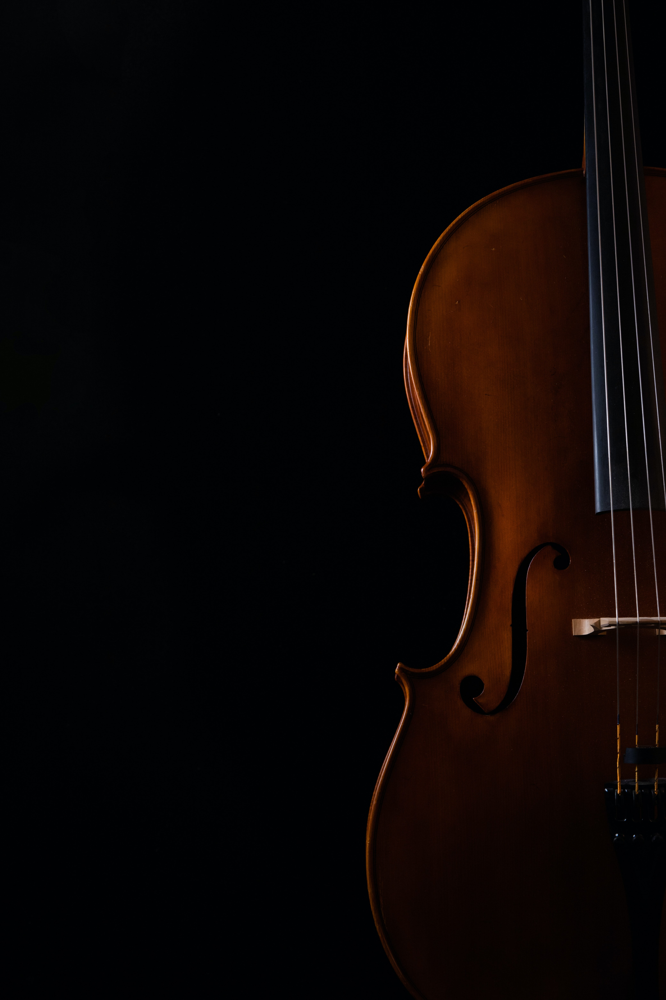

음악을 쉽고 재밌게 (easy,enjoy) E MU Music
스즈키메소드 원리
스즈끼 메소드란? 모국어를 배우는것 처럼 악기를 음악적 감각, 기억력, 집중력, 인간성 등과 함께 개발시키는 교육법
‘‘어느 나라에도 모국어를 제대로 구사하지 못하는 아이는 없다’’
어느 인간이라 할지라도 태어날 때부터 매일 음정이 전혀 맞지 않는 음치 음악의 레코드를 들으며 12~3년간 성장하면 한사람도 예외 없이 음치가 될 것이다.
이것은 세계 각지에서 성장하고 있는 모든 어린이들이 각각 자기나라 언어의 발음을 정확히 구사하는 것, 그리고 사투리를 배우게 되는 과정과도 일치한다.
이것은 인간과 재능의 문제를 해결하는 매우 중요한 열쇠가 된다. 왜냐하면 모든 인간의 어렸을 때 환경조건,
즉 교육방법으로 음치가 되어버린다는 것은 선천적으로 음악에 대한 재능을 갖고 태어나는 어린이는 없다는 것을 증명할 수 있기 때문이다.
‘‘재능은 타고나는 것이 아니라 길러지는 것이다’’
스즈키 박사는 60년 가까운 경험을 통해 음악의 재능은 태어난 후의 교육방법에 의해 어떻게든 개발된다고 하는 것을 알게 되었다.
어린아이가 태어난 후 매일 울 때마다 A. Vivaldi의 바이올린 협주곡을 들려주면 4,5개월 후에 그 아기는 그 곡을 분명히 기억한다.
다른 곡을 들려주어도 결과는 같다. 그리고 4년 내지 5년을 계속해서 명곡 명연주만을 매일 들려주면 얼마 후 음악적 감각이 뛰어난 어린이가 되는 것이다.
만약 당신이 자녀를 음악적 감각이 뛰어난 인간으로 성장하게 하고 싶다면 끈기 있게 매일 명곡을 들려주었으면 한다. 단 4,5개월 동안 같은 곡을 계속해서 들려주어야 한다.
왜냐하면 환경에 적응하여 그것을 능력으로 발휘하기 위해서는 적어도 그 정도의 회수와 시간이 필요하기 때문이다.
교육환경에 의해 인간은 음치가 되거나 음악적으로 뛰어난 인간으로 만들어 질 수 있다.
‘‘Every Child Can do! (누구나 할 수 있다)’’
이것은 모든 어린이는 뛰어난 능력을 지닌 어린이로 성장 할 가능성을 갖고 있다는 것을 의미하며 적합한 교육법에 의해 발현될 수 있다.
이것은 음악적 재능만의 문제가 아니라 모든 재능은 선천적이 아니라는 것을 의미하고 있다.
인간의 마음과 문학적 재능, 수학적 재능과 그 외 모든 재능은 태어난 후의 조건에 의해 자라난 것이라 할 수 있다.
세계 각지에 언어 재능교육이 예로부터 실시되고 있었다는 사실을 통해 입증되고 있다.
‘‘어린이의 능력은 부모에게 달려있다’’
모든 어린이를 태어난 날부터 가르쳐 보자. 아니 그 이전인 배속에서부터 가르치자. 어느 어린이라도 높은 가능성을 가지고 있다.
그 가능성을 발휘하게 하고 아름다운 마음과 뛰어난 감각을 지닌 인간으로 성장하게 하는 것은 가르치는 부모의 가치관과 의지에 달려있다. 확실한 목표의식을 갖자.
‘‘모국어 교육법’’
모국어를 가르치듯이 좋은 음악을 반복해서 들려주고, 엄마가 아기에게 한 단어 한 단어 가르치듯이 한 번에 한 가지씩 포기하지 않고 반복하여 꾸준히 가르치면
음악적으로 뛰어난 어린이를 기를 수 있다.
스즈끼 만의 특별하고 다양한 티칭 노하우를 배우는 커리큘럼
